Sistema de control de tóner
Proyecto propio · en producción
Aplicación web full stack para la gestión de tóner y equipos de impresión. Cada cambio de tóner se registra con su contador, el administrador lo aprueba, la secretaria agrega la guía de despacho y el sistema calcula cuánto rindió cada tóner y cuántos le corresponden a cada cliente al mes.
- Seguimiento de stock, niveles, series y estado de las máquinas.
- Autenticación con roles de usuario (administrador, secretaria y técnico) y base de datos en la nube.
- Diseño personalizable por cliente y kit de instalación replicable para nuevas empresas.
- Lo usan empresas reales; me encargo de su mantención, mejoras y resolución de incidencias.

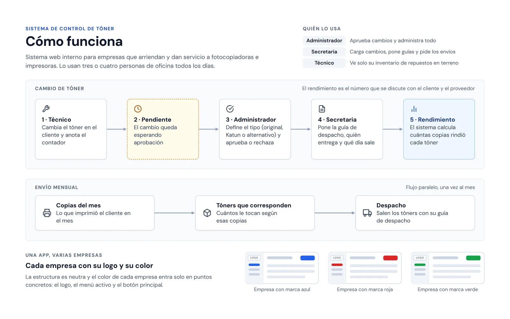
Ver en grande1 de 14
Cómo funciona
El recorrido de un cambio de tóner: el técnico anota el contador, el administrador lo aprueba, la secretaria pone la guía y el sistema calcula el rendimiento. Aparte, el envío mensual de tóners a cada cliente.
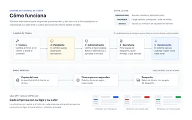
Cómo funciona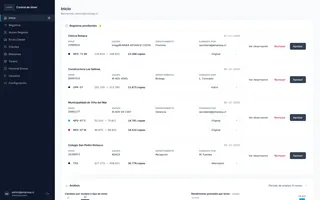
Inicio del administrador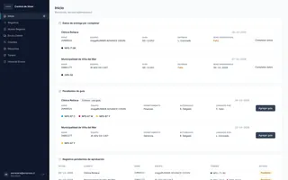
Inicio de la secretaria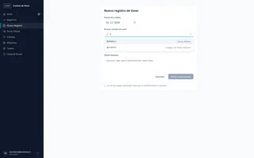
Nuevo registro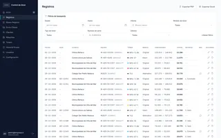
Registros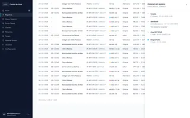
Historial de un registro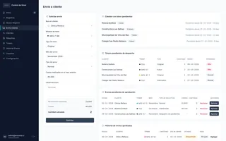
Envío a cliente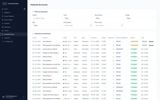
Historial de envíos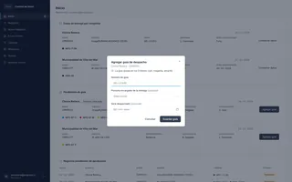
Guía de despacho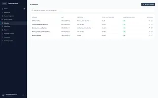
Clientes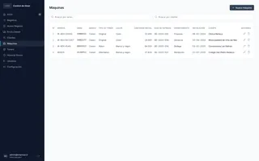
Máquinas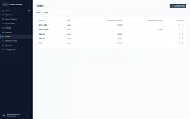
Toners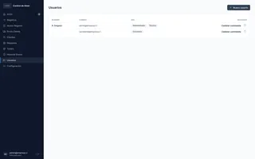
Usuarios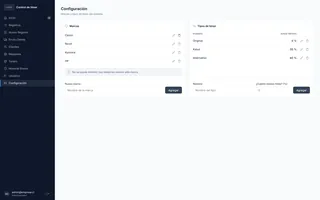
Configuración


El código es privado y las pantallas muestran datos de ejemplo. Puedo mostrar el sistema funcionando en una entrevista.